Measured on 2x captures of a production build (current main, after the homepage copy PR #1194) at 1440, 1280, 1024, 900, 768, 640, 390 and 360px, and the excerpts checked against the app’s own code and docs screenshots. Ranked by how visible each one is. Every “after” is the real fix, running on a prototype branch.
Alignment, spacing, type, excerpt fidelity, clipping. Copy and layout changes are in the other audit threads.
Checks
Typecheck and lint pass; no horizontal scroll from 360 to 1440px.
01
How it works · 1024–1150px
Step excerpts drop 26px when a title wraps
At four columns, “Compare them live” and “Open a pull request” wrap to two lines while steps 1 and 2 stay on one, so the excerpts for steps 3 and 4 start 26.4px lower (measured tops 2307 vs 2333px at 1024). The image row reads as broken.
Fix Each step becomes a subgrid row-span of four (label, title, excerpt, body), so every excerpt starts on the same line whatever its title does. scenes.tsx
Before
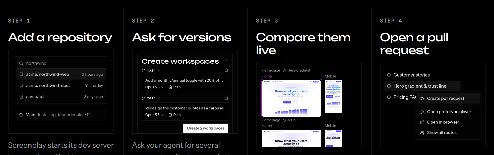
After
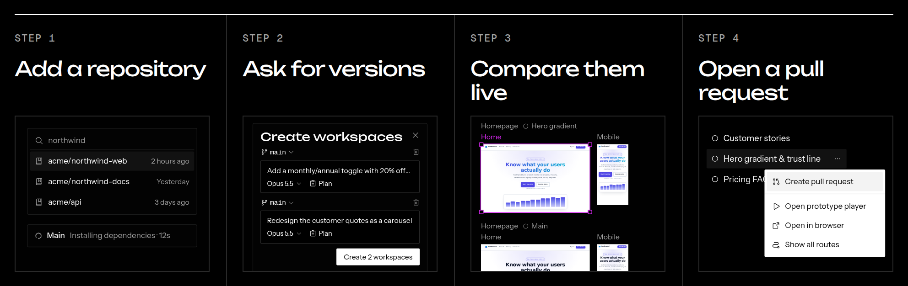
02
Fig. 1 · every width from 640px
Fig. 1’s frame bar hangs past its frame
The bar is pinned to the frame’s left edge and forced to at least 440px, so it overhangs the frame’s right edge by 77px at 1440, 93px at 1024 and 107px at 768. In the app the bar is centred under the selected frame (docs screenshot frame-selected), and the Problem section’s excerpt already draws it frame-wide.
Fix Centred under the frame and as wide as it, or 360px under a narrow frame, kept 8px inside the canvas. It now matches the frame exactly at 640–1440px; at 1024 the narrow canvas still leaves a small overhang (17px left, 64px right). canvas.tsx
BeforeAfter
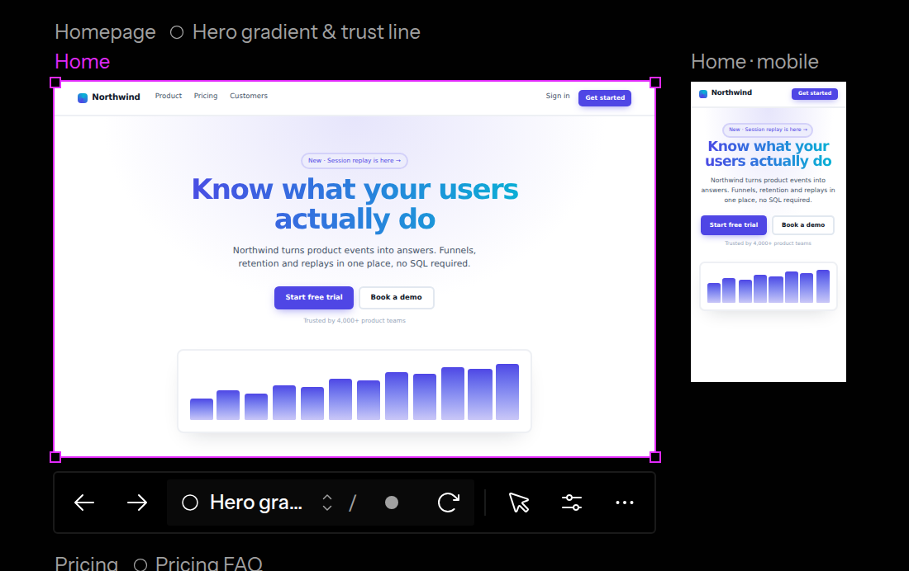
03
Fig. 1 · under 640px
A 60px hole in Fig. 1 on phones, with the tool bar on a label
The frame bar is hidden on phones, but the Pricing group still leaves room for it, so there’s an empty band under the selected frame and the canvas tool bar lands on the “Pricing FAQ” label.
Fix Without the bar the Pricing group moves up 40px (a --gap variable, 96px down to 56px). The tool bar now floats over the frame, as it does in the app. canvas.tsx
BeforeAfter
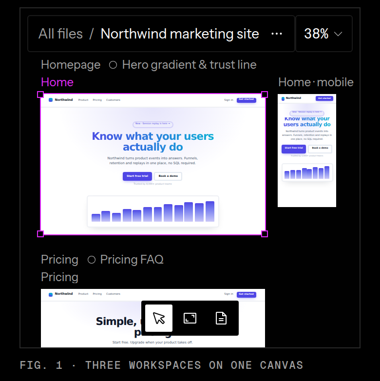
04
How it works · Step 4
Step 4’s menu is dark; the app’s menus are inverted
Since #1073 the app’s menus take the other theme, so the Workspace menu is white in dark mode (docs screenshot ws-menu). The excerpt draws it as a dark page-toned popover.
Fix The menu surface gets the shared inverted class, so it picks up the light tokens exactly as the app’s DropdownMenu does. steps.tsx
Before
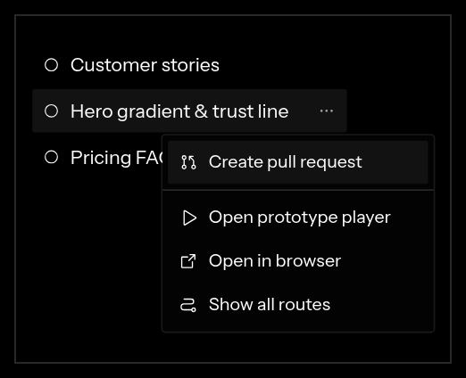
After
05
The problem · 1024px and up
“Without” and “With” captions sit in different places
“Without Screenplay” is inside the terminal box; “With Screenplay” is under the canvas box. The grid stretches the terminal to the full row, so it ends 25.4px below the canvas box.
Fix Both captions sit under their boxes in the same muted mono label, and the two boxes end on the same line. problem.tsx
Before
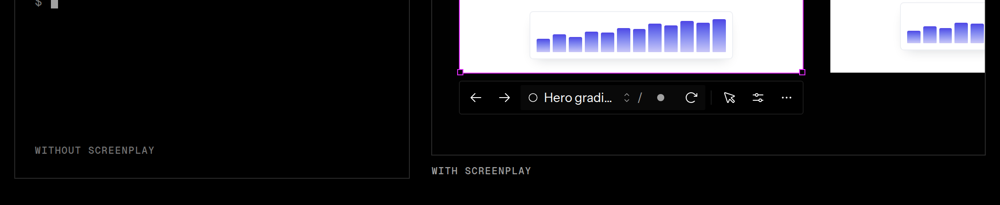
After
06
How it works · Step 3
Step 3’s second label is jammed under the selected frame
“Homepage ○ Main” starts 4px below the selected frame’s bottom handles, so the label reads as part of the frame above.
Fix Rows moved from top 52/204 to 46/212 in the 320×256 card: 20px between the handle and the next Group’s label. steps.tsx
Before
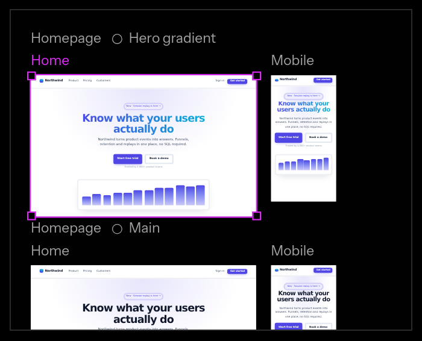
After
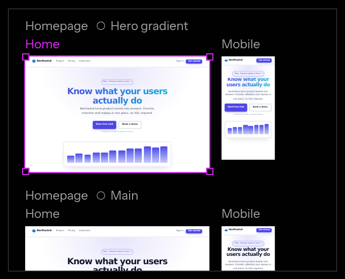
07
Header · 768px and up
Header nav sits 20px left of centre
justify-between centres the nav between a 177px wordmark and a 234px GitHub + Download cluster, so it lands 20px left of the page centre at every width.
Fix The header is a 1fr / auto / 1fr grid, so the nav is on the true centre. header.tsx
BeforeAfter
08
Self-hosting · 768px and up
Self-hosting’s lede floats above the first perk
Both columns start at the same y, but the perks begin with a hairline and 18px of padding, so the lede’s first line sits about 15px higher than “One canvas for the team”.
Fix The left column gets 14px of top padding at md and up, so the lede’s first line is level with the first perk’s title. self-hosting.tsx
BeforeAfter
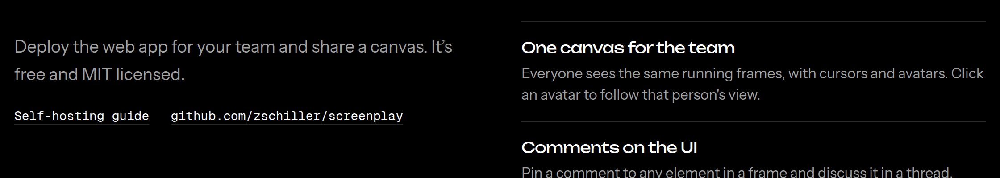
09
FAQ · keyboard focus
FAQ focus ring clips the question
Tabbing to a question shows the browser’s white ring flush against the text, cutting through the W and the +. Every other control on the page uses the magenta selection ring, offset 2px.
Fix The summary uses the page’s magenta ring with a 4px offset and a small radius. faq.tsx
BeforeAfter
10
Excerpts · type sizes
Excerpt labels and the frame bar are off the app’s type
Frame and Group labels are 11px and the bar’s Workspace is 14px regular. In the app both are 12px (text-xs), the address host is medium weight and the route is mono (frame-nav.tsx, group-label.tsx). The app’s scale is 12/14 only.
Fix Labels at 12px; the bar’s Workspace at 12px medium and the route slash in mono. Not changed: the chat panel’s 13px text, which would wrap badly at 14px in the 320px panel. canvas.tsx
BeforeAfter
11
How it works · 640–1023px
No rule between the two rows of steps
At two columns the grid has a top rule and a gutter hairline, but steps 3 and 4 hang under steps 1 and 2 with nothing between the rows.
Fix A hairline over the second row, carried across the gutter the way the Features grid does it. scenes.tsx
Before
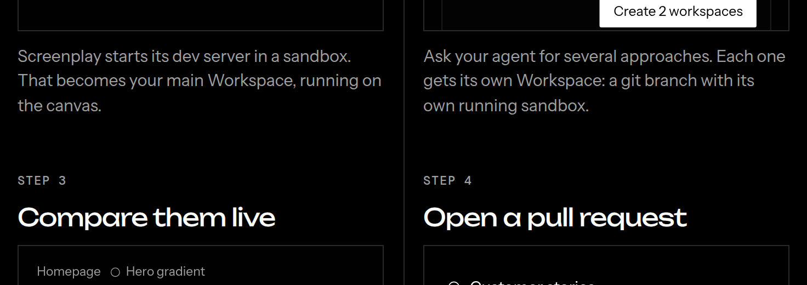
After
12
How it works · Step 2
Step 2’s button touches the crop
The “Create 2 workspaces” button ends 3px above the card’s bottom edge, which reads as clipped rather than cropped.
Fix The dialog’s rows are 2px tighter (gap-2), leaving about 12px under the button. steps.tsx
Before
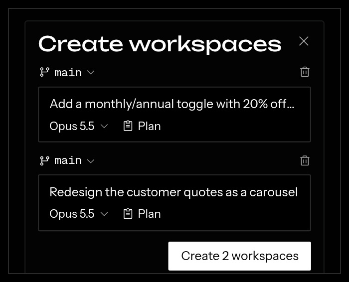
After
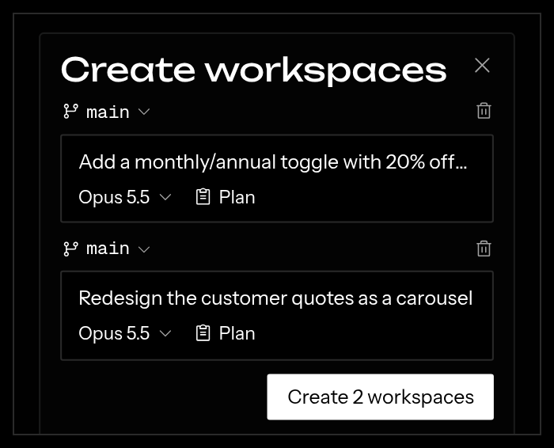
13
Hero and closing CTA · under 640px
Stacked buttons have different widths on phones
Under 640px the two buttons wrap onto separate lines at their own widths (309px and 235px), left-aligned, so the pair looks ragged.
Fix Under 640px the pair stacks full width with centred labels, in the hero and the closing CTA. hero.tsx, cta.tsx, editorial.tsx
Before
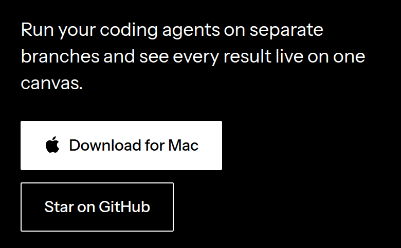
After
14
Footer
Footer’s package links break the column’s rhythm
The two npm links are 12px mono on a 16px line, so the Developers column steps 32, 32 then 28px while Product steps 32px.
Fix The mono links use a 20px line (text-xs/5), so both columns step 32px. footer.tsx
Before
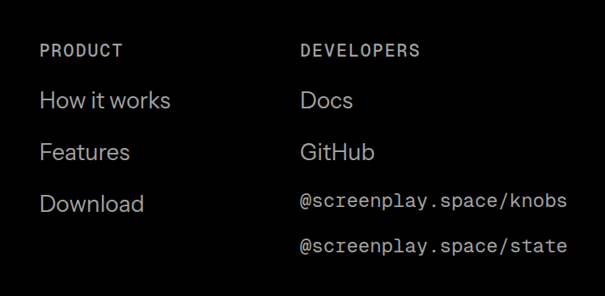
After
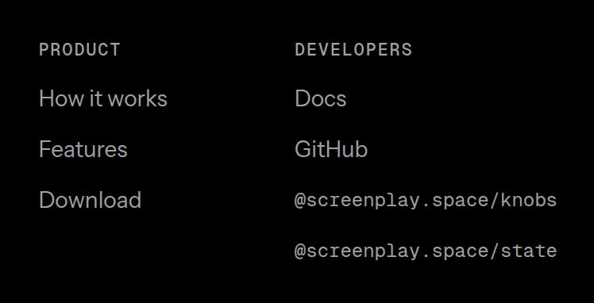
15
How it works, Features
Heading-to-content gap differs between sections
How it works and Features put 56px between the heading and the grid; Problem, Self-hosting and FAQ use 48px.
Fix 48px everywhere. scenes.tsx, features.tsx
BeforeAfter
Checked and left alone
The hero’s dither veil and the canvas are crisp at 2x, and the carousel’s edge crops are intentional.
No horizontal page scroll at any width from 360 to 1440px.
The FAQ’s + and – are the same width, so opening a question doesn’t shift the row.
Headline side bearings are 0 to 4px (Unbounded F and Instrument Serif E), too small to be worth optical offsets.
The excerpt composer shows only the model name, which matches the app after #1183; the docs screenshot predates it.